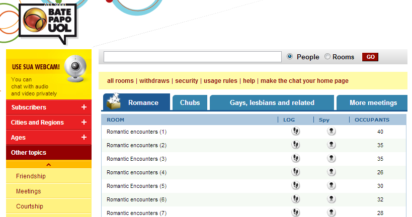

HC is a prolific world traveler constantly in search of the next hotspot to sow his royal oats. Having been a writer and a consultant for the past several years, he divides his time in the US between Washington DC and San Francisco.


In my recent forum thread about my brief recon mission in Rio de Janiero, I mentioned a friend of mine who has been living there for the past year without any intention of leaving anytime soon. As a place with many conflicting reports and inaccurate characterizations, solid boots-on-the-ground-intel about Rio has been desperately sought in the manosphere for some time. Sensitive to this clamoring for information, I decided to pick my friend’s brain to gain an insider’s perspective on how to pickup chicks in Rio. Here is what he suggested:
Samba schools are built around a local community. The people who go to these sorts of schools are normally members and have been members since they were kids. As a result, the bitch shields are lower and people tend to be friendlier than in the complete stranger environment of places like Rio Scenarium in Lapa and other bars and clubs around the city.
Must speak Portuguese for this one, but pretty much every hot girl in the city is in the mall AT LEAST once a month. Why not go to the places where the ladies frequent? Tijuca shopping and Barra shopping are golden.
You won’t find women of high quality here, but if you are looking to get your dance on, this is a great place to go for an easy pickup. Not frequented a lot by tourists. I recommend the grown and sexy ones like Rei do Bacalhau and Ilha dos Pescadores, not the ones on the favelas.
Great place to meet high quality, educated women. Bitch shields will be near non-existent. There are often more women than men in these classes, but knowing Portuguese is a requirement.

Great tool for pipelining. There are chat rooms where you can strike up convos with chicks…my girl knows several Brazilian couples who have met through here.
Happy hunting! :hump: